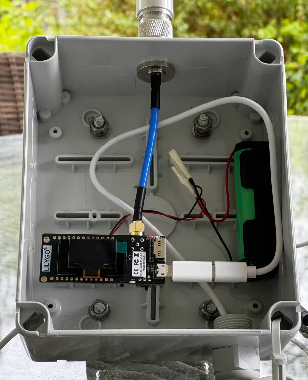

Gemenskapsdriven uppkoppling – ett nodprojekt i taget.
Vår communitymedlem Martin (SM7UVT) har nyligen byggt en solcellsdriven Meshtastic-nod med målet att placera den vid Ekhagen Östra, med utsikt över Jönköping. Projektet har gått igenom flera iterationer, med hjälp från andra medlemmar i Discord-communityn.
Martin började med att planera för en Heltec V3, men valde till slut ett Lilygo TTGO-kort tack vare dess robusta SMA-anslutning för antennen. För att förbättra stabiliteten monterades kortet med en chassi N-kontakt och styv koaxialkabel.
Den första lådan visade sig vara alldeles för stor i förhållande till den lilla elektroniken. Efter tips från en annan användare föreslogs en kopplingsdosa från Biltema som var betydligt mer passande – ett enkelt men smart hack.
Innan noden sattes upp permanent körde Martin ett flertal tester hemma. Allting fungerade stabilt, och solcellsladdningen höll noden igång som tänkt. Denna fas var viktig för att slippa göra ominstallationer ute i fält.
I mitten av juni monterades noden på ett balkongräcke med fri sikt över staden. Nu övervakas noden för att se hur bra solenergiladdningen klarar sig över tid – men de första resultaten är lovande.
Det här projektet visar vad man kan åstadkomma med lite vilja, en solcell och hjälp från ett engagerat community. Ett stort tack till Martin för att han delar sin resa – och för att han hjälper till att utöka vår Meshtastic-karta med stil!